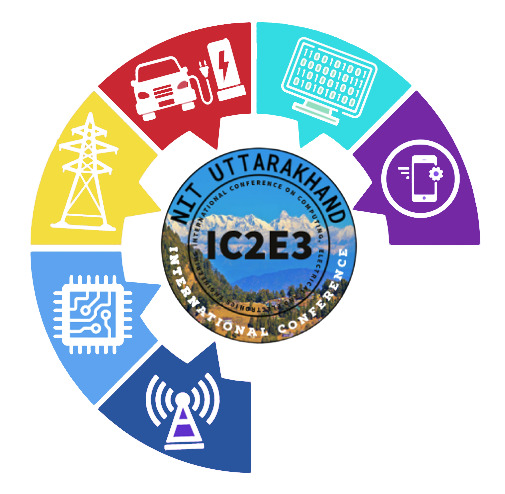

Keynote speakers
Prof. Emil Levi
IEEE Fellow
Liverpool John Moores University, United Kingdom

Emil Levi received his Dipl. Ing. degree in Electrical Engineering in 1982 from the University of Novi Sad and Masters and PhD degrees in 1986 and 1990, from the University of Belgrade (Yugoslavia). In the period from 1982 until 1992 he worked in the Department of Electrical and Electronic Engineering at the University of Novi Sad. He joined Liverpool John Moores University in 1992 and is since 2000 Professor of Electric Machines and Drives. Emil is a Fellow of IEEE (Class of 2009) and the recipient of the Cyril Veinott award of the IEEE Power and Energy Society for 2009 and the Best Paper Award of the IEEE Transactions on Industrial Electronics for 2008. In 2014, he received the “Outstanding Achievement Award” from the European Power Electronics Association. He served as Co-Editor-in-Chief of the IEEE Trans. on Industrial Electronics in the period 2009-2013 and currently serves as the Editor-in-Chief of the IEEE Trans. on Industrial Electronics (2019-2024) and as Editor-in-Chief of the IET Electric Power Applications (since 2010). Emil is with the Electric Machines and Drives Research Group at the Liverpool John Moores University, which is widely regarded as a centre of excellence for research in the areas of multiphase electric machine and power electronic converter modelling and control. The work of the Group is characterised with a high level of international collaboration, and it regularly accommodates academics from leading European Universities for research stays.
Prof. Han Slootweg
IEEE Senior Member
Eindhoven University of Technology & Enexis Netbeheer B.V., The Netherlands

Han Slootweg received the M.Sc. degree in electrical power engineering in 1998 (cum laude) and the Ph.D. degree in 2003, both from Delft University of Technology, Delft, The Netherlands. He also received the M.Sc. degree in business administration. He is currently Director of the Asset Management Department of Enexis Netbeheer B.V., Hertogenbosch, The Netherlands, one of the largest Distribution Network Operators of the Netherlands. Its spearheads are the strategic goals of Enexis: accelerating the transition towards a more sustainable energy supply and excellent, state of the art network operation. Han also holds a professorship in Smart Grids at the Electrical Energy Systems group at the Eindhoven University of Technology. He has (co-)authored more than 200 papers, covering a broad range of various aspects of electrical power systems.
Prof. Janusz Bialek
IEEE Fellow
Newcastle University, UK

Professor Janusz Bialek (FIEEE) was born and educated in Poland gaining MEng (1977) and PhD (1981) degrees in Electrical Engineering from Warsaw University of Technology. Since 2019 he has been Professor of Power and Energy Systems at Newcastle University, UK. Previously he held Chair Professor positions at the University of Edinburgh (2003-2009), Durham University (2009-2014) and Skolkovo Institute of Science and Technology (Skoltech, 2014-2022). Janusz’s main research interest is in the application of advanced mathematical methods to address techno-economic problems connected with the transformation of the power supply industry to a low-carbon economy. His background is in power systems, but his research is interdisciplinary and he collaborates closely with economists, mathematicians, statisticians, physicist and social scientists. He has published widely on integration of renewable generation in power systems, smart grids, power system dynamics, preventing electricity blackouts and power markets. Janusz has been Principal Investigator and Co-Investigator of multi-million research grants funded by Engineering and Physical Sciences Research Council (EPSRC, UK), Electrical Power Research Institute (EPRI, USA), Russia’s Ministry of Education and Science, and UK power industry.
Prof. Marco Liserre
IEEE Fellow
University of Kiel, Germany

Marco Liserre received the MSc and PhD degree in Electrical Engineering from the Bari Polytechnic, respectively in 1998 and 2002. He has been Associate Professor at Bari Polytechnic and from 2012 Professor in reliable power electronics at Aalborg University (Denmark). From 2013 he is Full Professor and he holds the Chair of Power Electronics at Kiel University (Germany). He has published 500 technical papers (1/3 of them in international peer-reviewed journals) and a book. These works have received more than 35000 citations. Marco Liserre is listed in ISI Thomson report “The world’s most influential scientific minds” from 2014. He has been awarded with an ERC Consolidator Grant for the project “The Highly Efficient And Reliable smart Transformer (HEART), a new Heart for the Electric Distribution System”. He is member of IEEE IAS, PELS, PES and IES. He has been serving all these societies in different capacities. He has received the IES 2009 Early Career Award, the IES 2011 Anthony J. Hornfeck Service Award, the 2014 Dr. Bimal Bose Energy Systems Award, the 2011 Industrial Electronics Magazine best paper award and the Third Prize paper award by the Industrial Power Converter Committee at ECCE 2012, 2012, 2017 IEEE PELS Sustainable Energy Systems Technical Achievement Award and the 2018 IEEE-IES Mittelmann Achievement Award.
Prof. Paulo Ribeiro
IEEE Fellow
Federal University of Itajubá, Brazil

Paulo Ribeiro received his B.S.E.E. from the Federal University of Pernambuco, Brazil, and the Ph.D. degree from the University of Manchester, Manchester, U.K., in 1985. He was a Research Fellow with the NASA Glenn Research Centers, Cleveland, OH, USA, Electric Power Research Institute (EPRI), USA, and Erskine Fellow with the University of Canterbury, New Zealand, and with the Brazilian Institute of Electric Energy (INERGE), Brazil. He taught full-time and worked in the industry in the USA for over 23 years. He also taught at the Technological University of Eindhoven, The Netherlands. He spent 8 years as a Transmission System Planning Engineer in Brazil. He is currently a Full Professor of electrical engineering with the Federal University of Itajubá. He has authored or co-authored more than 350 papers, book chapters, and 4 books. His current research interests include power electronics, and power quality, transmission and distribution systems, renewable and distributed generation, energy storage, smart grids, engineering education, and philosophy of technology. Dr. Ribeiro is a Fellow of IEEE and IET.
Technical Sponsers